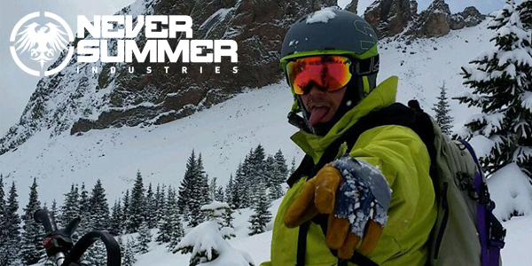

<div id="content">
  <div id="main">
    <div class="container">
      <div class="one_third">
        
      </div>

     <div class="two_third last">
						<h1>Kevin Ray Blue</h1>
						<p><b>MEET KEVIN...</b> I am from South West Colorado, grew up in Pagosa Springs, and spent all my time learning how to shred. I love the mountains here in the southern San Juans. From snowboarding to kayaking, to dirt biking there is always a way
							to shred, year round!
						</p>
						<p><b>KEVIN'S FAVORITE NS BOARD IS...</b> The Ripsaw - This board can transition from ripping pow to holding an edge in choppy icy conditions, due to the higher rise in the camber areas. I love how the extra length on the tip and tail allows you to
							easily shred switch or your normal direction in the pow.
						</p>
					</div>
      <hr>
  </div>
</div>